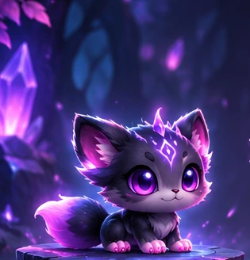

Evolution Showcase
Üks Beastkin. Neli evolutsioonivormi.
DNA jääb samaks, välimus areneb.
LV 1 · HATCHLING

HATCHLING
Abyssal Beastkin
Fighter · Common · Level 1
🧬 DNA profiil
SpeciesBeastkin
OriginAbyssal
RoleFighter
RarityCommon
Core traitTufted ears
Evolution traitSoft fur
Evolution progress
HatchlingJuvenileEvolvedAscended
Visuaalne demonstratsioon. Need neli illustratsiooni kujutavad üht etteantud Abyssal Beastkini. Nooled on eemaldatud ja pildid on ühesuguse kuvasuhtega. See ei ole veel juhuslikult genereeritud modulaarne 3D-tegelane. v1–v3 DNA-generaatorid jäävad eraldi alles; järgmine samm on teha iga liigi jaoks päriselt vahetatavad visuaalsed osad.
Mutant Lab · Evolution Hybrid · GitHub Pages compatible
Illustratsioonid on kohandatud v4 kontseptsioonist; nooled eemaldatud ning kadreering ühtlustatud.